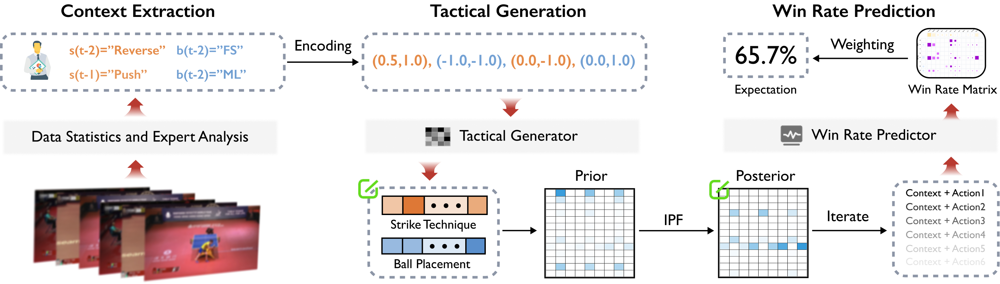

Context-based Simulative Analysis of Table Tennis Using Latent Tactical Patterns Learned from Sparse Data
Abstract
Simulative analysis plays an important role in competitive sports by supporting the evaluation of tactical adjustments. However, in real-world practice, the scarcity and long-tailed distribution of observational data undermine the reliability of statistics-based simulative analysis. This limitation becomes particularly pronounced when modeling stroke-level tactical contexts and inter-relationships among tactical attributes, which are essential for elite-level tactical analysis. In this paper, we propose PaLSim, a context-based simulative analysis framework that captures player-specific tactical patterns from sparse observational data to support more extensible and reliable simulation. We design and deploy an interactive dashboard based on PaLSim on the intelligent analytics platform of the Chinese National Table Tennis Team. Through an expert-involved user study, we validate the usability of PaLSim and receive positive feedback from professional analysts.
Architecture

Evaluation
In this section, we present the comparative results of our TG and WRP models against baseline models on the Ito dataset. We also report the improvement of the joint distribution calculated via the IPF method compared to the data statistics-based prior. The Ito dataset comprises 8,649 strokes. All experimental results are averaged over 10 random seeds, with both the mean and variance reported.
Table 1: Performance comparison of models for predicting pts and ptb
| Model | KLD ST ↓ | KLD BP ↓ | TVD ST ↓ | TVD BP ↓ | Rank ↓ |
|---|---|---|---|---|---|
| TG (Ours) | 0.1049 ± 0.0056 | 0.1246 ± 0.0081 | 0.1260 ± 0.0065 | 0.1640 ± 0.0059 | 1.25 |
| LSTM | 0.1127 ± 0.0038 | 0.1286 ± 0.0055 | 0.1439 ± 0.0060 | 0.1676 ± 0.0054 | 2.50 |
| SASRec | 0.1188 ± 0.0082 | 0.1329 ± 0.0060 | 0.1452 ± 0.0074 | 0.1690 ± 0.0070 | 3.75 |
| TabR | 0.1304 ± 0.0143 | 0.1369 ± 0.0075 | 0.1446 ± 0.0144 | 0.1724 ± 0.0059 | 4.75 |
| FT-Transformer | 0.1745 ± 0.0279 | 0.1374 ± 0.0314 | 0.1811 ± 0.0183 | 0.1528 ± 0.0148 | 5.00 |
| XGBoost | 0.1285 ± 0.0032 | 0.1815 ± 0.0057 | 0.1320 ± 0.0060 | 0.2096 ± 0.0024 | 5.00 |
| LR | 0.1573 ± 0.0000 | 0.1331 ± 0.0000 | 0.1876 ± 0.0000 | 0.1847 ± 0.0000 | 5.75 |
| Historical | 0.8916 ± 0.0000 | 0.4245 ± 0.0000 | 0.5400 ± 0.0000 | 0.2661 ± 0.0000 | 8.00 |
Table 2: Performance evaluation of the joint distribution inferred via IPF
| Method | JSD ↓ | TVD ↓ |
|---|---|---|
| TG + IPF (Ours) | 0.1050 ± 0.0065 | 0.2974 ± 0.0138 |
| Prior Baseline | 0.2983 | 0.5893 |
| Improvement (%) | 64.80% | 49.53% |
Table 3: Comparative evaluation of win rate prediction models
| Model | ECE ↓ | BSS (%) ↑ | SAS ↑ |
|---|---|---|---|
| WRP (Ours) | 0.0165 ± 0.0033 | 4.64 ± 0.08 | 0.7497 ± 0.0382 |
| XGBoost | 0.0432 ± 0.0051 | 4.52 ± 0.31 | 0.5167 ± 0.0371 |
| FT-Transformer | 0.0316 ± 0.0074 | 2.39 ± 0.26 | 0.6073 ± 0.0616 |
| LSTM | 0.0282 ± 0.0073 | 1.74 ± 0.34 | 0.6022 ± 0.0924 |
| TabR | 0.0292 ± 0.0050 | 1.57 ± 0.30 | 0.5943 ± 0.1129 |
| Bayesian | 0.0074 ± 0.0000 | 1.18 ± 0.00 | 0.8621 ± 0.0000 |
Ablation
In this section, we report the ablation study results for the TP and WRP models. The experimental setup remains identical to that in the previous section.
Table 4: Ablation study of components of TG
| Variant | KLD ST ↓ | KLD BP ↓ | TVD ST ↓ | TVD BP ↓ |
|---|---|---|---|---|
| TG (full) | 0.1049 ± 0.0056 | 0.1246 ± 0.0081 | 0.1260 ± 0.0065 | 0.1640 ± 0.0059 |
| w/o Hybrid Loss | 0.1049 ± 0.0045 | 0.1717 ± 0.0196 | 0.1220 ± 0.0047 | 0.1930 ± 0.0085 |
| w/o Pos + AttnGate | 0.1062 ± 0.0044 | 0.1288 ± 0.0082 | 0.1269 ± 0.0054 | 0.1652 ± 0.0074 |
| w/o AttnGate | 0.1073 ± 0.0047 | 0.1296 ± 0.0078 | 0.1269 ± 0.0062 | 0.1671 ± 0.0071 |
| w/o Pos | 0.1079 ± 0.0047 | 0.1313 ± 0.0053 | 0.1287 ± 0.0049 | 0.1664 ± 0.0047 |
| Baseline | 0.1112 ± 0.0052 | 0.1291 ± 0.0067 | 0.1306 ± 0.0087 | 0.1686 ± 0.0058 |
| w/o Uni (Bi) | 0.1137 ± 0.0080 | 0.1356 ± 0.0065 | 0.1303 ± 0.0070 | 0.1680 ± 0.0045 |
| Reverse Uni | 0.1137 ± 0.0071 | 0.1230 ± 0.0066 | 0.1291 ± 0.0069 | 0.1635 ± 0.0052 |
| w/o Uni + AttnGate | 0.1151 ± 0.0048 | 0.1297 ± 0.0090 | 0.1291 ± 0.0054 | 0.1662 ± 0.0068 |
| w/o Uni + Pos | 0.1160 ± 0.0082 | 0.1354 ± 0.0068 | 0.1330 ± 0.0072 | 0.1687 ± 0.0061 |
Table 5: Ablation study of components of WRP
| Variant | ECE ↓ | BSS (%) ↑ | SAS ↑ |
|---|---|---|---|
| WRP (full) | 0.0165 ± 0.0033 | 4.64 ± 0.08 | 0.7497 ± 0.0382 |
| GQA2MHA | 0.0179 ± 0.0054 | 4.60 ± 0.12 | 0.7397 ± 0.0851 |
| w/o ortho | 0.0182 ± 0.0052 | 4.64 ± 0.09 | 0.7308 ± 0.0995 |
| GQA2MLP | 0.0189 ± 0.0074 | 1.30 ± 0.13 | 0.6966 ± 0.1204 |
| w/o GQA | 0.0242 ± 0.0027 | 3.53 ± 0.38 | 0.6785 ± 0.0846 |
| Direct Pooling | 0.0418 ± 0.0045 | 4.74 ± 0.06 | 0.4127 ± 0.0519 |
| w/o OOF | 0.0526 ± 0.0135 | 3.85 ± 0.86 | 0.4871 ± 0.0861 |
Cross-player Evaluation
In this section, to investigate the generalizability of PaLSim across players with diverse tactical styles, we incorporate experimental results from the datasets of Fan Zhendong(7815 strokes), an all-around men's singles player, and Sun Yingsha(9259 strokes), a rally-dominant women's player. The results not only demonstrate the generalizability of our model but also reveal underlying connections between the empirical performance and the players' inherent tactical styles.
Specifically, players like Mima Ito tend to yield relatively weaker results in TG due to their highly unpredictable and variable tactical patterns, whereas the predictions for Fan Zhendong and Sun Yingsha are notably more accurate in this regard. Regarding WRP, we observe that the absolute BSS values on Sun Yingsha's dataset are relatively lower. This perfectly aligns with real-world scenarios: Sun frequently extends the game into long rally phases, securing victories through superior technical execution and consistency rather than relying heavily on complex, volatile tactics. Consequently, our purely tactic-based win rate prediction inherently exhibits a lower discriminative resolution for her matches. Conversely, as a male player characterized by extreme speed and explosive power, Fan Zhendong's identical technical choices can lead to a larger variance in actual outcomes. Thus, the consistency of predictions for him is slightly weaker compared to the other two players.
Table 6: Performance comparison of models for predicting pts and ptb with different players
| Model | Player | KLD ST ↓ | KLD BP ↓ | TVD ST ↓ | TVD BP ↓ |
|---|---|---|---|---|---|
| TG (Ours) | Ito | 0.1049 ± 0.0056 | 0.1246 ± 0.0081 | 0.1260 ± 0.0065 | 0.1640 ± 0.0059 |
| Sun | 0.0263 ± 0.0032 | 0.0762 ± 0.0038 | 0.0458 ± 0.0036 | 0.1351 ± 0.0053 | |
| Fan | 0.0298 ± 0.0015 | 0.1363 ± 0.0064 | 0.0475 ± 0.0027 | 0.1500 ± 0.0081 | |
| LSTM | Ito | 0.1127 ± 0.0038 | 0.1286 ± 0.0055 | 0.1439 ± 0.0060 | 0.1676 ± 0.0054 |
| Sun | 0.0324 ± 0.0057 | 0.0753 ± 0.0043 | 0.0532 ± 0.0060 | 0.1488 ± 0.0063 | |
| Fan | 0.0534 ± 0.0056 | 0.1632 ± 0.0052 | 0.0738 ± 0.0075 | 0.1901 ± 0.0051 | |
| SASRec | Ito | 0.1188 ± 0.0082 | 0.1329 ± 0.0060 | 0.1452 ± 0.0074 | 0.1690 ± 0.0070 |
| Sun | 0.0307 ± 0.0068 | 0.0783 ± 0.0072 | 0.0495 ± 0.0088 | 0.1415 ± 0.0069 | |
| Fan | 0.0362 ± 0.0052 | 0.1423 ± 0.0081 | 0.0625 ± 0.0075 | 0.1604 ± 0.0088 | |
| TabR | Ito | 0.1304 ± 0.0143 | 0.1369 ± 0.0075 | 0.1446 ± 0.0144 | 0.1724 ± 0.0059 |
| Sun | 0.0298 ± 0.0044 | 0.0746 ± 0.0042 | 0.0505 ± 0.0058 | 0.1253 ± 0.0051 | |
| Fan | 0.0388 ± 0.0029 | 0.1371 ± 0.0043 | 0.0594 ± 0.0057 | 0.1547 ± 0.0065 | |
| FT-Transformer | Ito | 0.1745 ± 0.0279 | 0.1374 ± 0.0314 | 0.1811 ± 0.0183 | 0.1528 ± 0.0148 |
| Sun | 0.1142 ± 0.0097 | 0.1250 ± 0.0113 | 0.1257 ± 0.0066 | 0.1924 ± 0.0078 | |
| Fan | 0.0802 ± 0.0130 | 0.1549 ± 0.0051 | 0.0972 ± 0.0148 | 0.1898 ± 0.0050 | |
| XGBoost | Ito | 0.1285 ± 0.0032 | 0.1815 ± 0.0057 | 0.1320 ± 0.0060 | 0.2096 ± 0.0024 |
| Sun | 0.0515 ± 0.0036 | 0.0811 ± 0.0038 | 0.0793 ± 0.0044 | 0.1230 ± 0.0035 | |
| Fan | 0.0351 ± 0.0011 | 0.1362 ± 0.0064 | 0.0454 ± 0.0018 | 0.1862 ± 0.0051 | |
| LR | Ito | 0.1573 ± 0.0000 | 0.1331 ± 0.0000 | 0.1876 ± 0.0000 | 0.1847 ± 0.0000 |
| Sun | 0.0572 ± 0.0000 | 0.1180 ± 0.0000 | 0.0808 ± 0.0000 | 0.1833 ± 0.0000 | |
| Fan | 0.0440 ± 0.0000 | 0.1654 ± 0.0000 | 0.0669 ± 0.0000 | 0.1869 ± 0.0000 | |
| Historical | Ito | 0.8916 ± 0.0000 | 0.4245 ± 0.0000 | 0.5400 ± 0.0000 | 0.2661 ± 0.0000 |
| Sun | 0.6790 ± 0.0000 | 0.2822 ± 0.0000 | 0.4181 ± 0.0000 | 0.2575 ± 0.0000 | |
| Fan | 0.8011 ± 0.0000 | 0.4082 ± 0.0000 | 0.4916 ± 0.0000 | 0.2946 ± 0.0000 |
Table 7: Performance evaluation of the joint distribution inferred via IPF with different players
| Method | Player | JSD ↓ | TVD ↓ |
|---|---|---|---|
| TG + IPF (Ours) | Ito | 0.1050 ± 0.0065 | 0.2974 ± 0.0138 |
| Sun | 0.0433 ± 0.0044 | 0.1793 ± 0.0133 | |
| Fan | 0.0583 ± 0.0036 | 0.1924 ± 0.0121 | |
| Prior Baseline | Ito | 0.2983 | 0.5893 |
| Sun | 0.2369 | 0.5088 | |
| Fan | 0.2638 | 0.5417 | |
| Improvement (%) | Ito | 64.81% | 49.54% |
| Sun | 81.74% | 64.76% | |
| Fan | 77.90% | 64.48% |
Table 8: Comparative evaluation of win rate prediction models with different players
| Model | Player | ECE ↓ | BSS (%) ↑ | SAS ↑ |
|---|---|---|---|---|
| WRP (Ours) | Ito | 0.0165 ± 0.0033 | 4.64 ± 0.08 | 0.7497 ± 0.0382 |
| Sun | 0.0144 ± 0.0059 | 1.39 ± 0.81 | 0.5940 ± 0.2289 | |
| Fan | 0.0264 ± 0.0058 | 4.12 ± 0.12 | 0.5807 ± 0.1386 | |
| XGBoost | Ito | 0.0432 ± 0.0051 | 4.52 ± 0.31 | 0.5167 ± 0.0371 |
| Sun | 0.0451 ± 0.0072 | 0.69 ± 0.21 | 0.4270 ± 0.0921 | |
| Fan | 0.0371 ± 0.0045 | 2.43 ± 0.23 | 0.4906 ± 0.1054 | |
| FT-Transformer | Ito | 0.0316 ± 0.0074 | 2.39 ± 0.26 | 0.6073 ± 0.0616 |
| Sun | 0.0332 ± 0.0063 | 1.99 ± 0.18 | 0.4655 ± 0.1284 | |
| Fan | 0.0432 ± 0.0115 | 4.56 ± 0.45 | 0.4533 ± 0.1179 | |
| LSTM | Ito | 0.0282 ± 0.0073 | 1.74 ± 0.34 | 0.6022 ± 0.0924 |
| Sun | 0.0361 ± 0.0103 | 2.17 ± 0.68 | 0.4526 ± 0.1479 | |
| Fan | 0.0369 ± 0.0080 | 4.29 ± 0.44 | 0.5125 ± 0.1562 | |
| TabR | Ito | 0.0292 ± 0.0050 | 1.57 ± 0.30 | 0.5943 ± 0.1129 |
| Sun | 0.0298 ± 0.0085 | 1.12 ± 0.45 | 0.5012 ± 0.1523 | |
| Fan | 0.0385 ± 0.0072 | 3.85 ± 0.38 | 0.4856 ± 0.1245 |
More information will be released after the paper is accepted.